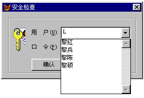
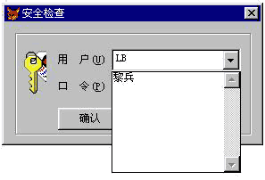

|
|
| 当前位置：电脑报电子版 > 1999 年 > 44 期 > 软件世界 > 用VFP6的组合框实现逐键显示查询 |
| 《 用VFP6的组合框实现逐键显示查询 》 |
| 在Windows环境的应用程序中，随处可见组合框的使用，它主要用于多选一的选择项。在数据库的应用程序中，不论是输入输出还是查询界面，更是经常使用组合框与用户交互，并且其选项往往具有较多的条目，这就产生了如何更快地定位所需选项的问题。在见过国内的多种商业管理软件中，组合框中的选择项都是一条条地浏览查找，当你试用软件或使用它提供的例子时，由于列表项不多（几条或十几条），不会觉得有问题，但投入一个使用的实际系统时，会感到很不方便。 Visual Foxpro 6.0的组合框有两种型式，由Style属性决定：Style=0为缺省值。下拉组合框，它允许不下拉直接输入值或下拉后从列表中选择值，这对于查询等不需精确控制输入值时可采用。但是要保证数据参照完整性时，都建议采用另一种型式，Style=2。下拉列表，只能选择输入，这时用户可能选择不正确的值，但是他不能输入不存在的值，这样可以保证数据的参照完整性。 组合框的数据源一般是一个表，视图或数组，在数据库应用中选择项较多的情况可能是选择客户名、商品名等。组合框本身不提供过滤（Filter）的查找方式，只提供两种定位方法，由它的IncrementalSearch属性决定：IncrementalSearch=.T.，首字符匹配，IncrementalSearch=.F.，渐进式查找，这对于英文还是相当快捷。遗憾的是，这两种都不接受汉字，并且许多用户对输入汉字查找有意见，对于模糊的或反复的查找很不方便。实践证明，采用汉字拼音首字母输入作为查询值，可以过滤到匹配的记录，具体作法，结合一个员工登录表单的组合框为例进行说明。 在建立员工的基本资料表时，建一个字段 Namp，C型，每当新增员工或更改姓名后，根据姓名产生一个拼音码：汉字拼音首字母串，如“黎兵”，就把“LB”存入相应记录的 Namp 字段中。 在登录表单的数据环境中加入员工基本资料表，使用下拉列表框（Style=0）接受用户名的输入，且设置员工基本资料表的姓名字段为其数据源。在组合框的 Keypress 事件中接受用户的输入值：可视键盘字符，一般只用26个字母，10个阿拉伯数字符及其它常用字符。用户的输入值应该要在表单上显示，当然可以在旁边用一个标签或文本框显示，但界面不美观，可以利用下拉组合框的Displayvalue 属性显示输入值。使用效果见图1和图2，程序代码如后。 登录表单组合框程序代码：(注意：刷新列表项，不能用Refresh 方法) 表单 Iinit 事件中： Set Exact OFF ＆＆过滤时模糊匹配 public m_namp ＆＆用于保存输入值 m_namp=′′ thisform.dataenvironment.cursor1.filter=′namp=m_namp′ ＆＆设置基本资料库过滤条件 组合框 Dropdown （下拉）事件中： this.style=0 ＆＆改为下拉组合框以显示输入值 this.displayvalue=m_namp ＆＆显示输入值 this.tag=′.t.′ ＆＆置下拉标志 组合框 Click （回收）事件中： this.style=2＆＆恢复为下拉列表框 this.tag=′.f.′ ＆＆删除下拉标志 组合框 Keypress （按键）事件中： LPARAMETERS nKeyCode, nShiftAltCtrl ＆＆接收系统传来的按键参数 k=nkeycode if (between(k,33,127) or k=7) and this.tag=′.t.′ ＆＆下拉状态 if k=127 or k=7 m_namp=left(m_namp,len(m_namp)－1) ＆＆Backspace 或 Del 键 else m_namp=m_namp＋upper(chr(k)) ＆＆字符键,合成查询值 endi this.displayvalue=m_namp ＆＆显示输入值 nowno=recno() this.requery＆＆刷新列表项 if this.listcount=0 ＆＆无符合条件的，清空输入值且全部显示 m_namp=′′ this.displayvalue=′′ this.requery ? chr(7) wait window ′没有符合条件的记录! ′ timeout(1) if nowno>0 and nowno<=recc() go nowno endi endif nodefault ＆＆不执行父类代码（首字符匹配，或渐进式查找） endif 每键入一个拼音码，列表的内容就缩小到匹配的记录，择一项就很容易了。因为很多地方都需使用组合框选择客户名，商品名等，可以把这种组合框定义为一个类。 这个方法在奔腾计算机，五千条记录的情况下，逐字符过滤库，刷新列表，速度相当快，不会有停顿的感觉，效果很好。 （重庆 黎兵） |
| 下载本期推荐软件 | 页 首 |
| 《电脑报》版权所有，CPCW网站编辑部设计制作发布 |